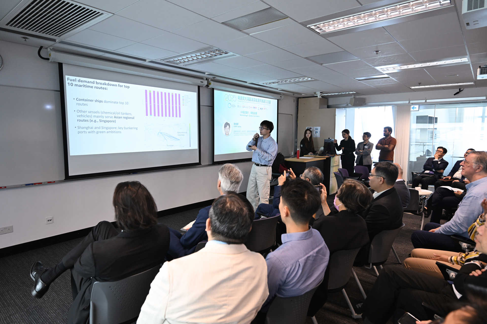
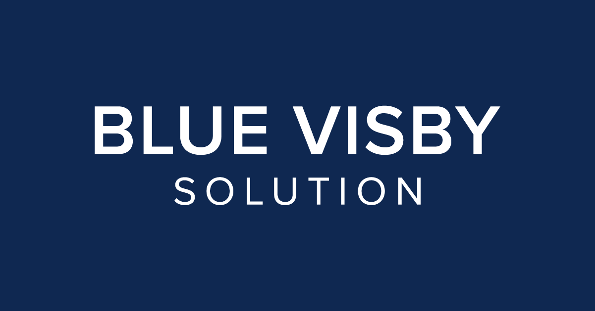
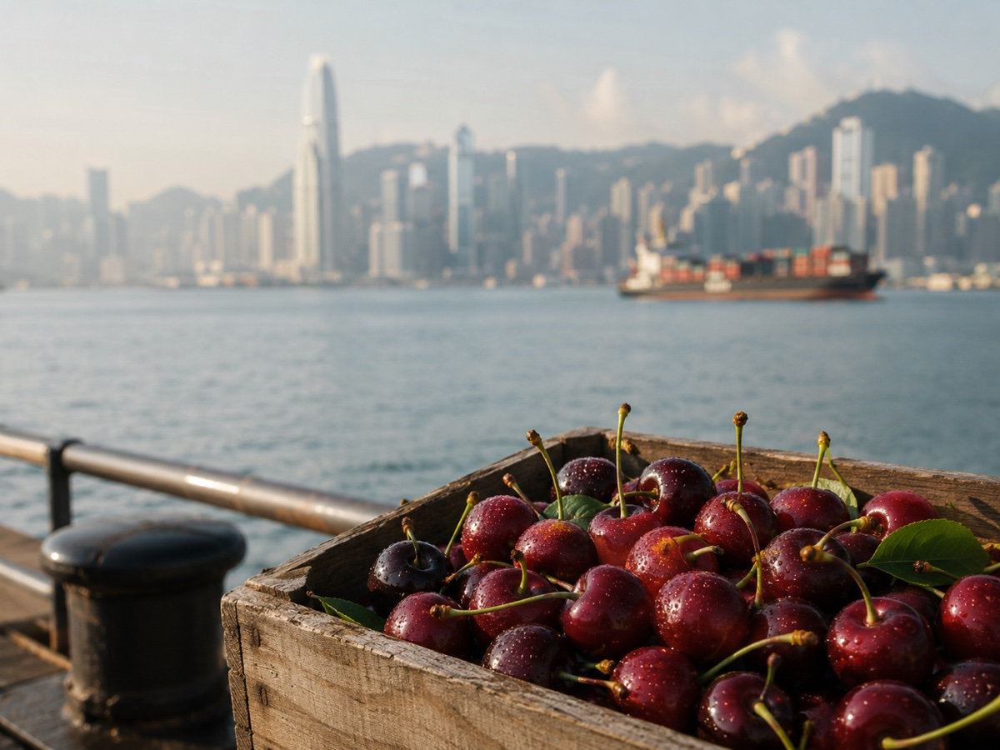

Academic Service
Ad hoc reviewer for Applied Energy.
Professional & Policy Engagement
Hong Kong’s potential green shipping corridor
Guangdong–Hong Kong–Macao Greater Bay Area Clean
Energy Supply Chain Conference · 2025
Invited presentation
View the conference report
Presented a data-driven roadmap for Hong Kong-led green
shipping corridors, identifying high-impact long-haul container
routes and proposing a phased pathway from vessel-specific
pilots to wider intra-Asian and trans-Pacific partnerships.

The shipping practice of ‘Sail Fast Then Wait’ and the
Blue Visby Solution
Contributed to an HKUST technical study assessing the
air-quality and health benefits of mitigating Sail Fast Then
Wait through the Blue Visby Solution. Its findings on air
emissions reductions and avoided mortality were referenced in
BIMCO’s information paper MEPC 82/INF.32, submitted to the
International Maritime Organization’s Marine Environment
Protection Committee.

Public Engagement
‘Cherry Express’ can be a green shipping corridor
Each year, Chilean cherries travel nearly 20,000 kilometres
across the Pacific to Hong Kong. Nearly half are sorted and
transferred within an hour of being unloaded, then continue to
dining tables across Asia. This efficiency rests on Hong
Kong’s long-established strengths in port transshipment
and cold-chain logistics.
As global shipping moves towards a low-carbon transition,
international logistics corridors must be not only fast but
also greener. The “Cherry Express” has a unique
opportunity to become a demonstration green corridor. Building
on its efficient cold chain, it can pioneer low-carbon fuels
and greener operating models, turning Hong Kong’s
traditional logistics strengths into a new competitive
advantage in the era of green shipping.
